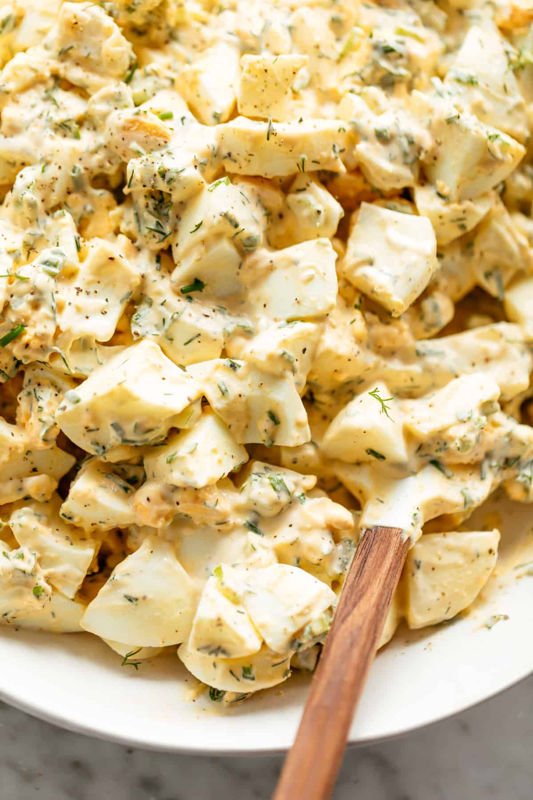

Egg Salad

Egg salad is a classic dish made from hard-boiled eggs that have been chopped or mashed and mixed with mayonnaise and other ingredients such as mustard, onions, celery, and herbs. It is a popular sandwich filling, but can also be served as a side dish or a topping for salads. Egg salad is a quick and easy dish to prepare and is a great way to use up leftover hard-boiled eggs. It is also a versatile dish that can be customized to suit individual tastes by adjusting the seasoning and ingredients used. Egg salad is a delicious and satisfying meal that can be enjoyed any time of day.
Ingredients
- Eggs
- Mayonnaise
- Mustard
- Green onion
- Seasonings
Steps
- Start by boiling 4-6 eggs until they are hard-boiled.
- Once the eggs are cooked, peel them and chop them into small pieces.
- In a mixing bowl, add mayonnaise, mustard, chopped green onions, and seasonings such as salt and pepper to the chopped eggs.
- Mix all the ingredients until everything is well combined.
- Taste the egg salad and adjust the seasonings as needed.
- Refrigerate the egg salad for at least 30 minutes before serving to allow the flavors to blend together.
- Serve the egg salad as a sandwich filling, or as a topping for crackers or salads.